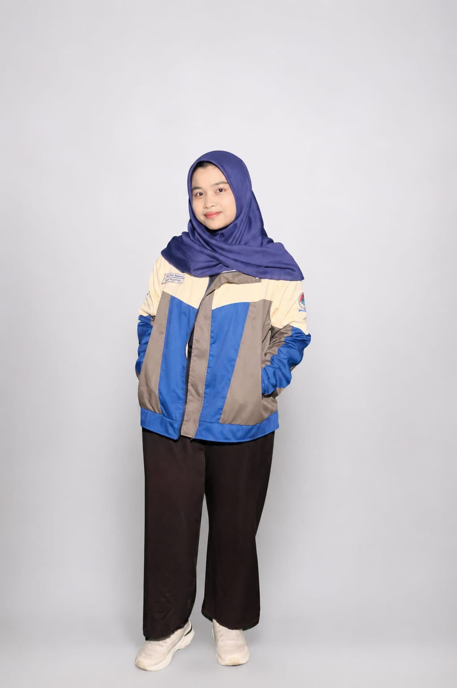

Securing Systems &
Crafting Clean Webs.
Hi, I'm Azmi Hani Nawra Ma'arif. An Informatics undergraduate at Universitas Ahmad Dahlan focusing on Cyber Security, heuristic malware analysis, and full-stack backend engineering.
$ whoami
Cyber Security Enthusiast | Asisten Praktikum | Fiction Writer 🌸
$ |

Beyond the Code
Bridging Security Engineering & Organizational Leadership
As an Informatics student at Universitas Ahmad Dahlan, I thrive at the intersection of defensive security and backend architecture—dissecting network packets, writing custom YARA detection rules, and building scalable web applications.
Outside the lab, I served in the Informatics Student Association (HMIF) for two consecutive terms, contributed to department and faculty committees, and actively mentor peers as a Teaching Assistant (Asisten Praktikum) alongside working in faculty administration.
HMIF Terms
Active committee leadership & student governance at department and faculty levels.
Asisten Praktikum
Guiding lab sessions in Cryptography, Computer Security, Computer Graphics, and Decision Support Systems.
The Creative Side: Fiction & Literature
When I'm not hunting anomalies or debugging Laravel routes, I immerse myself in reading novels and writing original fiction stories—sharpening my storytelling and out-of-the-box problem solving.
Tools & Capabilities
Cyber Security & Analysis
Full-Stack & Database
Development & Productivity
Featured Projects
YARA Media Anomaly Detector
A security-focused web prototype built with Laravel designed to inspect uploaded media files and detect heuristic malware anomalies using custom-engineered YARA rules.
meta:
author = "Azmi Hani"
category = "Heuristic"
condition:
$payload_sig at entrypoint
}
Kartika Logistik Management
Backend system featuring multi-subdomain routing for regional branches, automated shipping tariff calculations, and sequential tracking numbers.
Interactive Web Applications
Collection of responsive front-end interfaces, custom UI themes, browser mini-games, and interactive web utilities built from scratch.
My Portfolio Archive (Google Drive)
Complete repository of academic coursework, project documentation, design assets, and official certificates stored in Google Drive.
Continuous Learning
ASAH Dicoding Program — AI Full-Stack Developer Path
2026Intensive career-readiness training covering artificial intelligence integration, modern full-stack web engineering, and scalable application architecture.
Google Skill AI Labs
2026Practical hands-on training in operating Google Cloud Skill Labs, experimenting with generative AI workflows, and managing cloud-based automation environments.